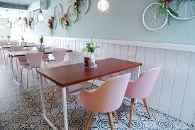

O dia começou e eu estava entrando na cafeteria, pronta para avaliar os tipos de café daquele local
Você começa sua experimentação no Cappuccino com espuma
Você escolhe o Espresso panna, apesar do café estar com um bom gosto, ele estava frio